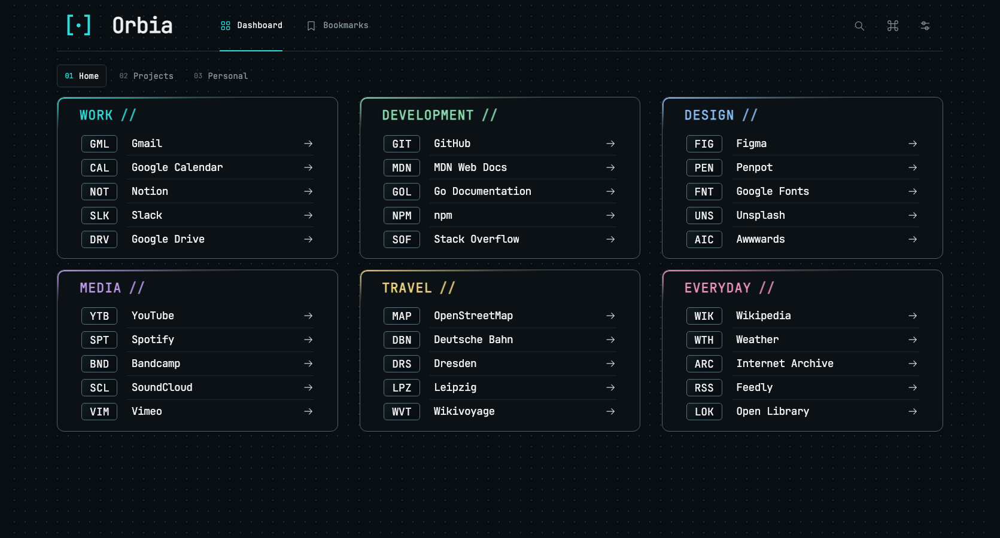
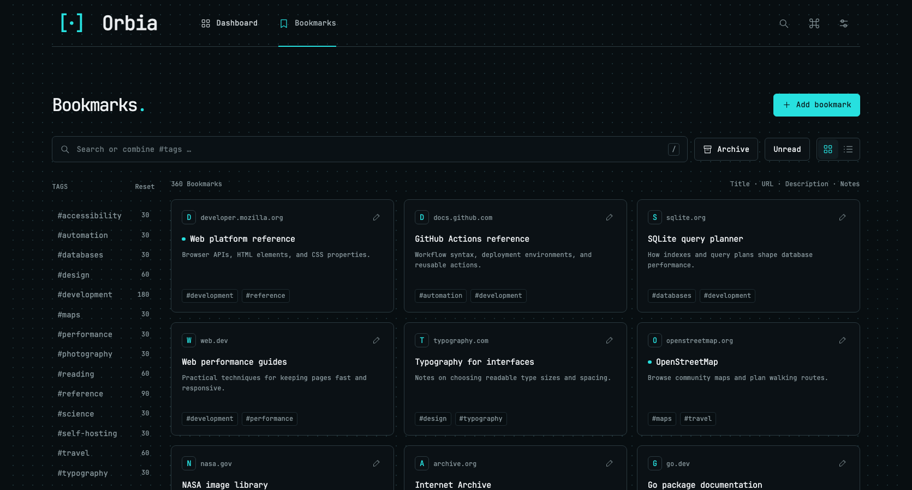
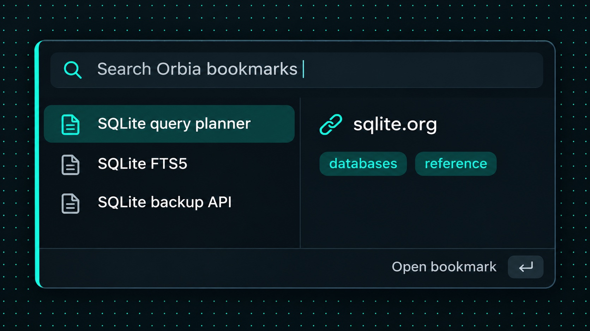

Search your bookmarks
Search titles, URLs, and notes. Add a tag like #work to narrow the results.
Quicklinks & bookmarks
Set Orbia as your browser’s home page. Type a short code to open a favorite site, or search your bookmarks when you need a link you saved. Orbia runs on your own server or in a Docker container.
The dashboard
Group the sites you visit most by topic or project. Type a link’s three-character code to open it.

Search titles, URLs, and notes. Add a tag like #work to narrow the results.
Create groups, choose your own codes, and drag quicklinks between groups.
Switch dashboard pages or find an action by typing its name.
Change the theme, language, or how links open.
Manage your bookmarks efficiently. Filter by tags, search by keywords, and keep your links organized.

Installation
Start Orbia with Docker Compose. A SQLite database on your server stores your bookmarks and dashboard pages.
Install and start Docker Desktop. Then open Terminal and run these commands. Docker downloads the public Orbia image on the first run.
mkdir -p "$HOME/Orbia"
docker run -d --name orbia \
--platform linux/amd64 \
--restart unless-stopped \
-p 127.0.0.1:8726:8726 \
-e PUID="$(id -u)" \
-e PGID="$(id -g)" \
-v "$HOME/Orbia:/data" \
ghcr.io/ranitzky/orbia:latestOpen http://127.0.0.1:8726 on your Mac and complete setup. Orbia is reachable only from your Mac. The database stays in ~/Orbia/orbia.db when you replace the container.
In Settings → Import from Linkding, enter your Linkding server URL and an API token from that server. Select Start import and keep the tab open. Orbia imports active and archived bookmarks with their tags and notes. You can run the import again to pick up new or updated bookmarks.
Orbia provides a Linkding-compatible API for bookmarks, tags, and profile lookups. To connect a client such as the Linkding browser extension or the Linkding extension for Raycast, generate a token under Settings → Linkding integrations and give the client your Orbia server URL and that token.
